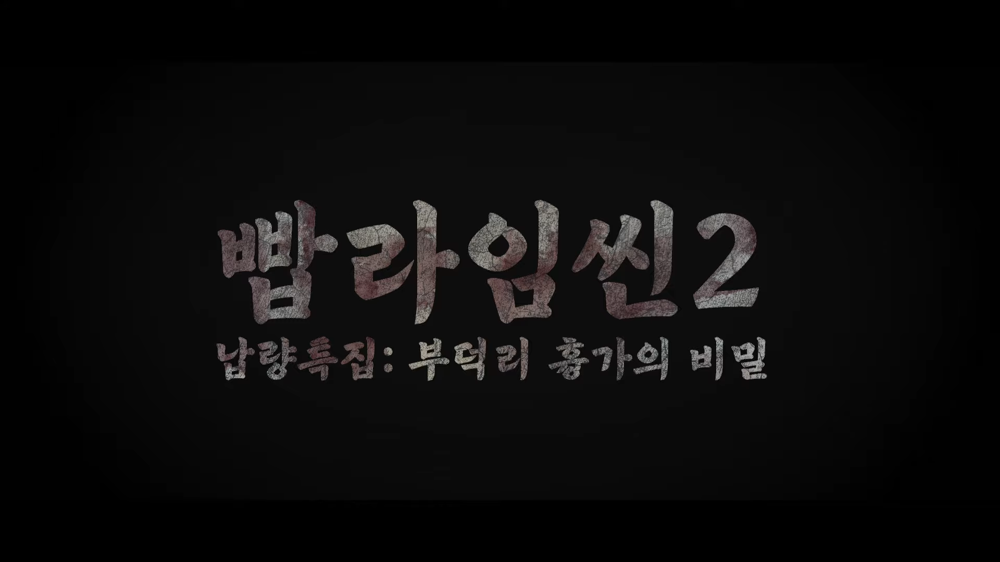
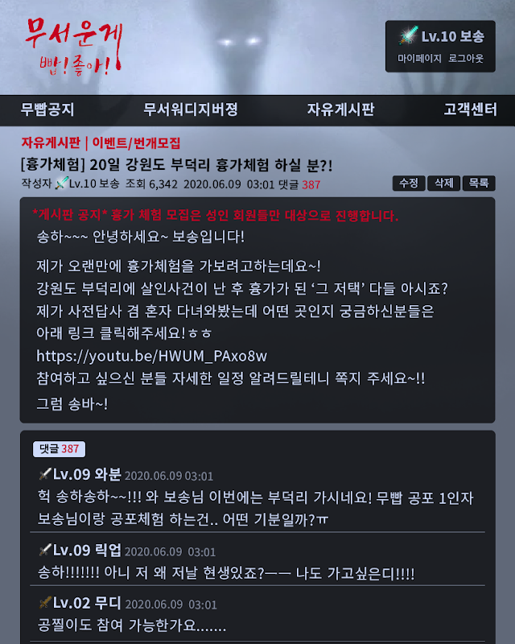

|  |
| 빱라임씬 에피소드2 부덕리 흉가의 비밀을 찾아라! |
| 장르: 공포·스릴러 |
| 제작: 자빱TV |
강원도 부덕리 흉가체험 도중 일어난 의문의 살인사건.
2020년 6월 20일 새벽 4시 김자빱 탐정은 트위터 DM1 으로 흉가에서 시체를 봤다는 제보를 받아 강원도 부덕리에 도착하게 된다. 피해자의 이름은 양보송. 그는 목에 큰 상처를 입어 사망한 것으로 보이며, 사망 추정시간은 새벽 3시 ~ 4시이다.
! 스포주의 !
해당 문서에는 1차적으로 공개된 정보 외엔 가림처리하였으나, 스포일러 당할 수 있습니다.
| 이름 | 기린 | 곡길 | 대지 | 람지 | 복수 | 왕눈 |
| 직업 | 카페 알바생 | 유튜버2 | 배관공 | 유학생3 | (사이트 운영자) | 고등학생 |
| 나이 | 22세 | 27세 | 36세 | 22세 | 44세 | 19세 |
"이상한 소리를 듣긴 했지만 나갈 수가 없었어요"
무빱 썰 장인으로 사이트 레벨은 9이다. 시체 발견 시각에는 화장실에 있었다.
"이거 찍었으면 골드버튼인데!"
무빱 네임드로 사이트 레벨은 9이다. 사건 현장 최초 발견자이다.
"화장실 가다가 이게 웬 봉변이죠?"
무빱 궁예신으로 사이트 레벨은 6이다. 사건 현장 최초 발견자이다.
"짜증나니까 빨리 범인이나 찾죠"
무빱 뉴비로 사이트 레벨은 4이다. 시체 발견 시간에는 자고 있었다.
"내가 왜 여기에...? 양보송이 죽었다구요?"
무빱 눈팅족으로 사이트 레벨은 2이다. 시체 발견 시간에는 정원에 있었다.
"저요? 그냥 자고있었는데요?"
무빱 지박령으로 사이트 레벨은 9이다. 시체 발견 시간에는 자고 있었다.
| 이름 | 김자빱 | 도난수 |
| 직업 | 명탐정 | 탐지견 |
| 이름 | 양보송 | 제보자 H |
| 직업 | - | - |
| 나이 | 30세 | - |
| 사이트 레벨 | 10 | - |
